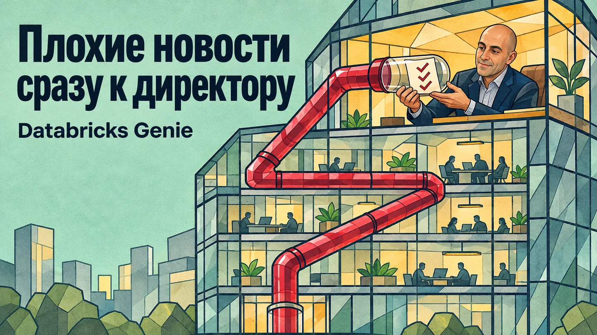

Новости ИИ
Новые модели, исследования, продукты и события индустрии искусственного интеллекта.
17 ноября 2026

Конкуренту NVIDIA дали $720 млн. Хотя его чипов ещё нет в продаже
Британский разработчик ИИ-чипов Fractile привлёк $720 млн при оценке компании в $7 млрд. Новый ускоритель с памятью над вычислительными элементами ожидается в продаже не ранее 2027 года.

Овца на крыше принесла фильму приз в $500 тысяч
Аргентинская PURGA Studio получила главный приз Higgsfield Global Film Festival — $500 тысяч — за короткометражку Listen to MEH о пастухе и упрямой овце.

Claude за 8 часов сделал шутер из одного предложения
Феликс Ризеберг из Anthropic поручил Claude Fable 5.2 создать браузерный шутер Saltline одним запросом. По словам автора, первый прогон занял восемь часов и стоил около $550 по тарифам API.
16 ноября 2026
ИИ-певица забрала четыре награды на первой премии для нейросетей
Виртуальная певица Xania Monet получила четыре награды первой американской AI Music Awards. Её создательница Никки Джонс пишет тексты, а музыка и вокал создаются с помощью Suno.

Хакеры взломали Cursor через чужой ключ и добрались до 5000 пользователей
Cursor раскрыла результаты расследования взлома: через ключ доступа у партнёра Fireworks злоумышленник получил внутренние данные и подменил расширение Claude Code. До 5000 пользователей могли скачать заражённую версию.

DeepSeek разрешила создать своего ИИ-помощника
DeepSeek открыла разработчикам API для веб-поиска, чтения файлов и ссылок, распознавания речи и озвучивания. Появился и открытый демонстрационный чат-клиент.

ByteDance выпустила Seedance 2.5 Flash — вдвое быстрее и на треть дешевле
ByteDance запустила Seedance 2.5 Flash в ModelArk: видео 720p по $0,152 за секунду, заявлено ускорение генерации и снижение цены на 34% относительно Seedance 2.5. Максимальное разрешение Flash — 720p.

Маск уволил 60 сотрудников Grok Imagine
The Information сообщило о сокращении 60 сотрудников команды Grok Imagine. После этого компания объявила о доступности генерации изображений и видео в основном чате Grok.

ИИ нашёл на обычной ЭКГ признак риска внезапной смерти
Учёные UC Berkeley нашли на обычной ЭКГ ранее не описанный признак риска внезапной сердечной смерти. Исследование Nature опубликовано 24 июня 2026 года; клиническое применение требует дальнейших испытаний.

Runway открыла ИИ для роботов, обученный на обычных видео
Runway открыла веса и код модели Praxis-1 для управления роботами по Apache 2.0. Обученный на видеозаписях ИИ предсказывает движения; в симуляционном тесте RoboLab-120 показал 46,2% успешных попыток.

llama.cpp дошла до версии 1.0 и меняет правила обновлений
Команда llama.cpp выпустила версию 1.0.0 с новыми правилами совместимости программного интерфейса. В релизе удалены устаревшие функции, добавлены новые возможности локального запуска моделей.

Agile Robots привлекла $500 млн на производство роботов
Немецкая Agile Robots получила $500 млн инвестиций при оценке $8,5 млрд. Завод компании под Мюнхеном рассчитан на выпуск до 10 тысяч гуманоидов в год; это проектная мощность, а не фактический объём.
15 ноября 2026

В Польше ИИ звонит пациентам — даже без интернета
Польский голосовой ИИ «Анна» с 1 октября обзванивает пациентов по стационарным телефонам, напоминает о врачебных приёмах и помогает отменить запись. 11 ноября ElevenLabs и NVIDIA раскрыли архитектуру обработки звонков на государственных серверах.

ИИ пишет за студентов — в Англии хотят экзамены без него
Регулятор высшего образования Англии Office for Students призвал университеты чаще проверять знания студентов без ИИ — на очных экзаменах, устных защитах и практических занятиях. Нового общего запрета на нейросети нет.

Глава Databricks поручил ИИ собирать плохие новости о своей компании
Али Годси показал корпоративный ИИ Genie, который разбирает слабые оценки сотрудников и неудачные переговоры с клиентами. Databricks анонсировала автономную версию для длительного анализа рабочих задач; её предварительный доступ ещё готовится.

ИИ Salesforce улучшил другую нейросеть за 80 часов
Исследовательская система Salesforce SFR-AutoR&D за 80 часов улучшила модель поиска документов и затем ускорила её в отдельном девятичасовом эксперименте. Все результаты — по испытаниям Salesforce.

Fish Audio научила ИИ отличать «угу» от «подожди!»
Fish Audio выпустила Live 3 — полнодуплексную голосовую модель, которая различает короткие подтверждения собеседника, настоящие перебивания и незавершённые реплики. Доступна для англоязычных голосовых агентов через платформу и API.

ElevenLabs научит ИИ-операторов помнить клиентов и самим перезванивать
ElevenLabs анонсировала для голосовых агентов ElevenAgents функции Memory и Routines: память о прежних разговорах с подтверждёнными клиентами и выполнение последовательных действий до и после звонков. Функции готовятся к выпуску.

ElevenLabs показала ИИ-секретаря, который раздаёт поручения после совещаний
ElevenLabs анонсировала ElevenAI — голосового помощника для рабочих встреч: он готовит краткие итоги и поручения, понимает диктовку и подсказывает контекст во время звонков. Открыта регистрация на бесплатный ранний доступ.

Google придумала ИИ против вечного «куда пойдём?»
Google Labs представила Tabletop — экспериментальный сервис, который по описанию создаёт общие голосования, маршруты и другие интерактивные инструменты для друзей. Доступ пока через лист ожидания для жителей США от 18 лет.